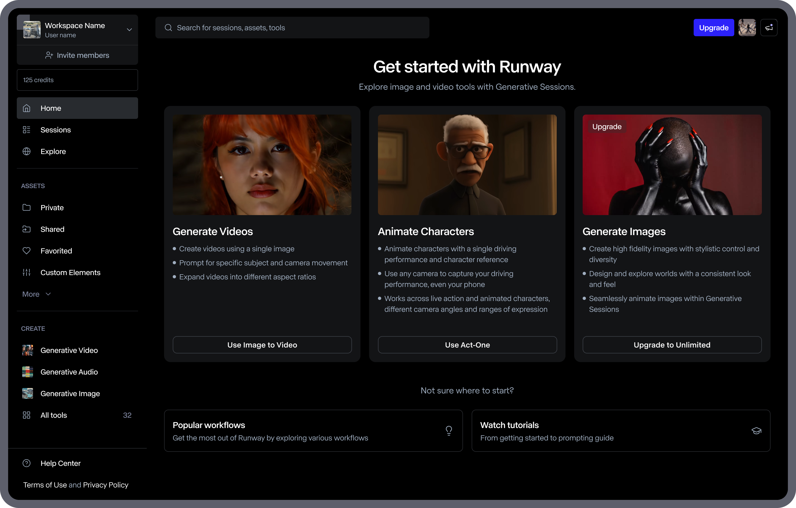
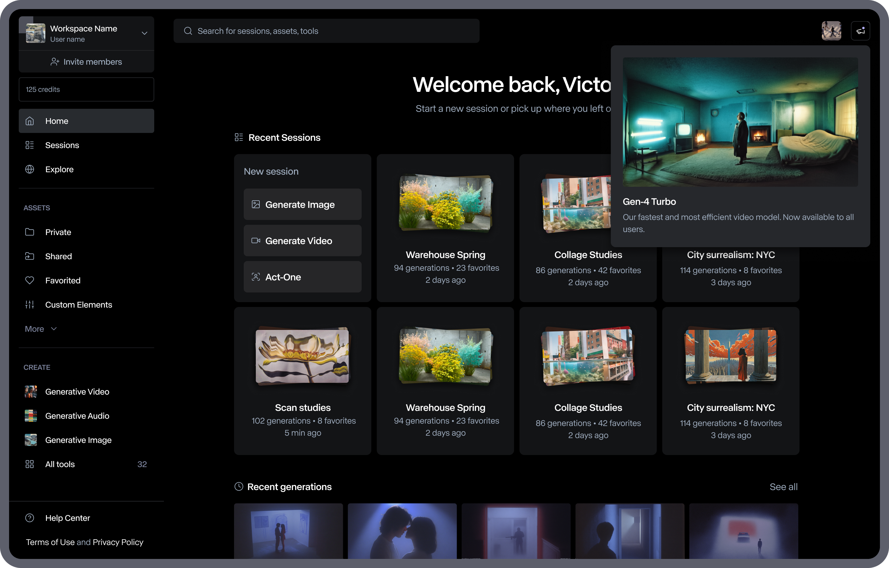
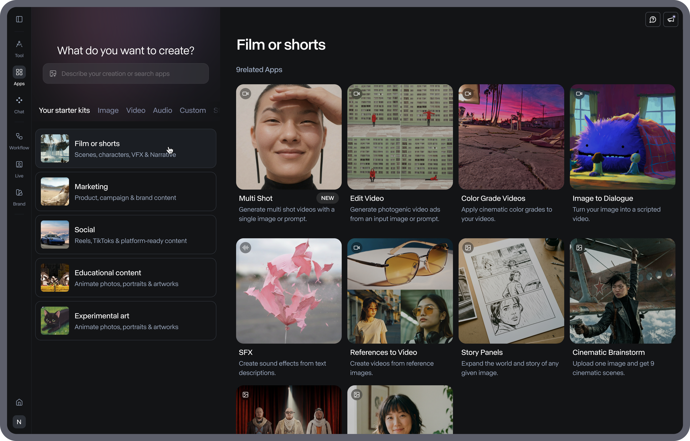
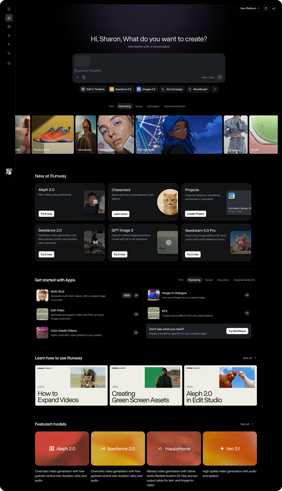
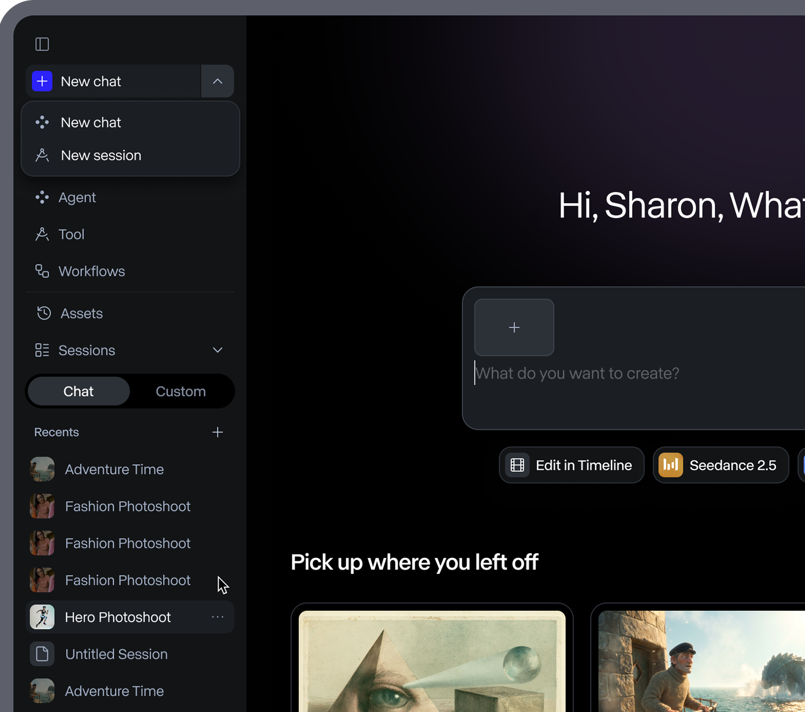
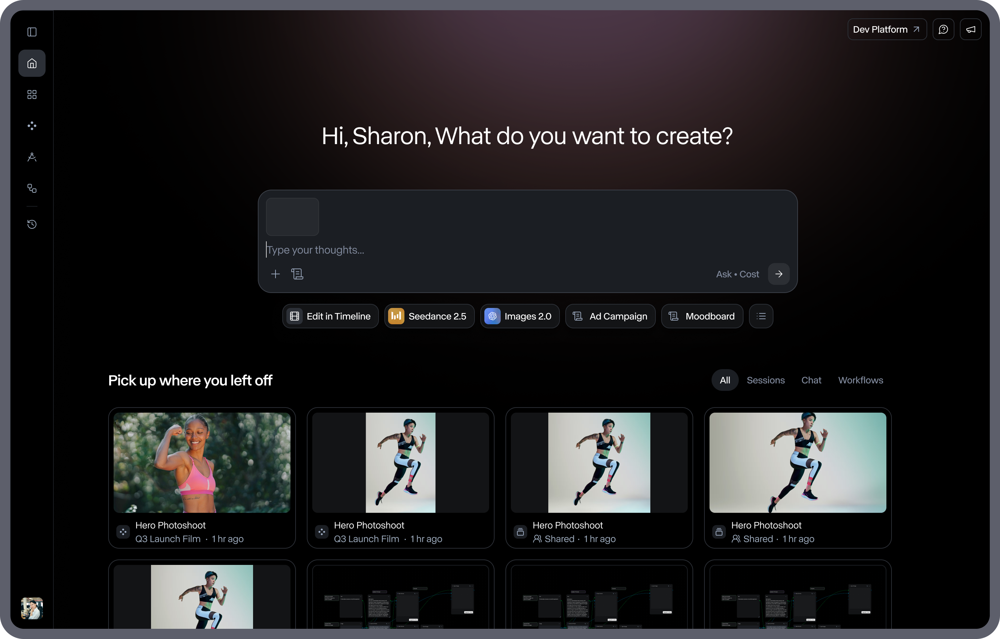

Home & Nav
Standardizing the landing experience
Runway had grown into a multi-product company, but new and returning users landed on one of three surfaces: a new-user dashboard with outdated CTAs, a dashboard of past generations, or the Apps page. None of them told that story, so Agent and new models were easy to miss.
I redesigned home as one modular surface that is the main entry point to Agent and introduces new features and models. I spearheaded collaboration with the Creative team to curate its content, and drove alignment with the Agent team to feature the right skills and models.
Early A/B results: activation rose from 13.3% to 21.7%, Agent activation grew about 4x, and cancellation among new subscribers fell from 16.2% to 12.7%. A new navigation and quick settings get people back to their sessions in one move.
Problem
New users land on various surfaces without guidance on where to start or what to try next
Discovery failure
New and returning users don’t see the full range of Runway’s capabilities.
Missed activation
No meaningful place to drive users toward new products or prompt them into their next valuable action.
No narrative
Runway is a multi-product company (Agent, Dev platform and more), but the app fails to reflect that story.
Before
Where people landed



Goal
Home as a durable and versatile surface for everything Runway
Agent adoption
The primary entry point for new and returning users.
New feature discovery
Introduce new features and models in the product.
Coherent wayfinding
An easy way to navigate to and switch between product offerings.
Personalized recommendations
Based on each user’s creation journey, recommend new ideas and tools.
A surface for collaboration
Showcase assets and projects shared with you, so you can get right into creating.
Measures of success
How we’d know it worked
Less sidebar-only discovery
Sidebar click-through on the first session goes down.
Faster first action on login
Time to first generation goes down.
Higher Agent activation
More new users start a conversation with Agent within 30 days of launch.
Solution
Runway Home

Navigation
Get to your sessions right away

Early results
Activation is up, and Agent is driving it
13.3% → 21.7% activation
Activation is up and faster across all users, and more so for returning users than new ones.
About 4x Agent activation
Agent activation rose from 1.3% to 5.6%, and clicks into the Agent flow went up 4–5x.
16.2% → 12.7% cancellation
Fewer new subscribers cancel, and among D1 new users cancellation fell from 18.9% to 13.6%.
6.1% → 27.4% home pill clicks
Home pills are clicked far more, helped by an improved visual design, and lead to more activation.
10.9% → 8.4% tool mode clicks
D1 new users rely less on jumping into individual tools.
Gaps
Where it can do better
Recommendations
People click “More skills” more than the recommended skills, so the recommended set can be more targeted.
From chat to generation
Fewer people who start a chat with Agent reach a generation (75% → 64%), likely because of multi-turn friction.
What’s next?
Returning user home
Targeted recommendations
A more targeted set of presets and home pills that evolves based on your usage.
Pick up where you left off
Jump into recent sessions right away.
Upsell at first activation
With activation this much higher, test a subscription upsell at that moment.
